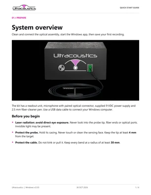
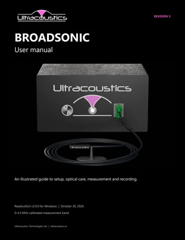

Setup
Quick start guide
Illustrated steps for cleaning, connecting the hardware, starting the software and saving your first recording.
Resources / Manuals & Guides
Setup, optical care, software operation and troubleshooting for the BROADSONIC microphone and readout unit.
Windows ReadoutGUI v2.0.0 Updated

Setup
Illustrated steps for cleaning, connecting the hardware, starting the software and saving your first recording.

Reference
Detailed hardware care, software controls, calibration, triggering, recording and troubleshooting instructions.